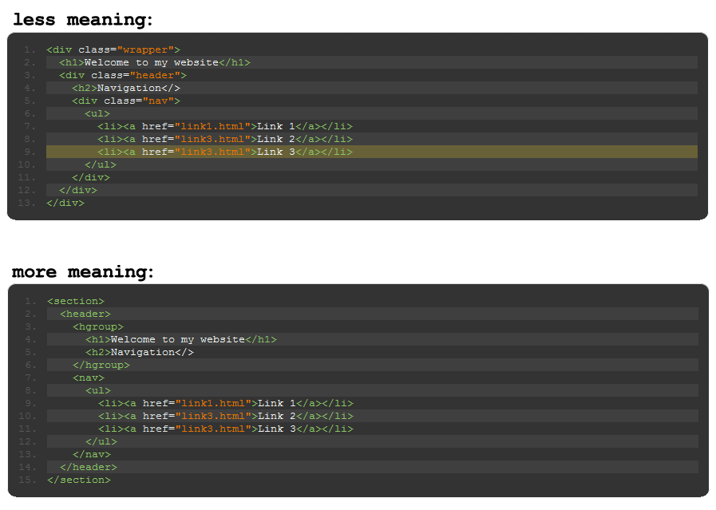

Use the ↑, →, ↓, ← keys.
Intro to HTML5
What is it? Advanced Forms, Microformats, Mobile Apps, Rich Media, & more
Reading Recap
"Five Things You Should Know About HTML5" - Mark Pilgrim
Main points:
Reading Recap
"What is HTML5?" - Me
Main points:
http://www.dennisplucinik.com/blog/2012/01/27/what-is-html5/
What is HTML5?
Basically, a bunch of cool new tags and features
- Offline & Storage
- Device Access
- Connectivity / Realtime
- Performance & Integration
- Multimedia
- Semantics
- Graphics, 3D & Effects
- CSS3 / Styling
Semantics

Multimedia
- HTML5 video works on iOS vs. Flash video
- Easy to make custom skins (Check out video.js)
Graphics, 3D & Effects
- The new 'canvas' feature is similar to Flash
- Videos can be manipulated with JavaScript (Check out three.js)
Graphics, 3D & Effects
- New libraries let you generate smooth 3D interactions (Check out three.js)
CSS3 / Styling
Even more crazy stuff
- Facial detection (demo)
- Games (Canvas Rider, Angry Birds, Field Runners, Lime.js - game engine, html5gameengines.com)
- Parallax (Nike - Better World, Nike - Jumpman, Diablo Media)
- Drawing tools (Processing.js, Harmony)
- Robust web applications (demo - 280 Slides, Popcorn.js)
- Presentation tools (Impress.js, Reveal.js, Deck.js)
- Stunning visuals (demo)
Advanced Web Forms
- Designed to enhance existing form functionality (e.g., iPhones have a different keyboard when entering a phone number or an email address)
- Again, replacing the functionality of a problem otherwise solved with heavy handed JavaScript (e.g., progress bars)
- More examples
- ...even more examples
Questions
?
Assignment
Start applying HTML & CSS to your designs.